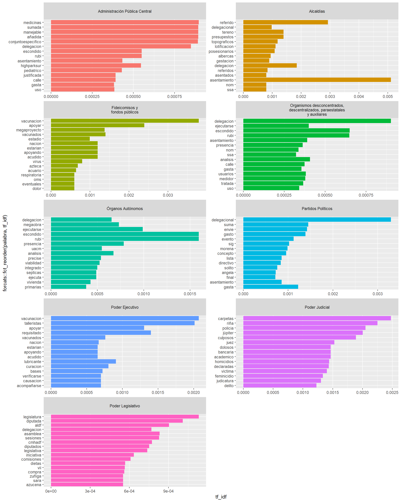
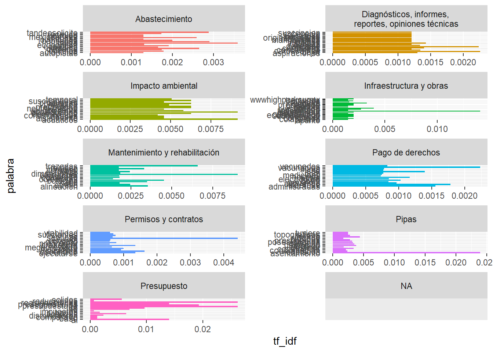

Análisis de Solicitudes de Información Pública (SIP) relacionadas al tema de agua potable en la Ciudad de México
code
text-analysis
visualization
spanish
R
Python
Author
David Humberto Jiménez S.
Published
February 3, 2024
“Un mago nunca llega tarde, Frodo Bolsón. Ni pronto. Llega exactamente cuando se lo propone.” Gandalf
¡Bienvenidxs! Sé que he tenido abandonado este proyecto durante algún tiempo. Pero, la verdad sea dicha, he tenido mucho trabajo.
Este es el primer post de la nueva iteración del blog (la tercera) y ahora está montado sobre Quarto. ¿Que qué es quarto? Quarto es un sistema de código abierto (Open source) para la publicación técnica/científica. Esto quiere decir que un montón de personas brillantes estaban hartas de lidiar con varias herramientas al mismo tiempo para trabajar y poder publicar sus artículos, páginas, libros y blogs. La principal ventaja, para mí, es que puedes trabajar con python, R, Julia y Observable JS; dentro del mismo documento. Aunque nunca he utilizado Julia.
Además, los documentos utilizan la misma estructura que un markdown lo que nos facilita la vida, ya que no hay que aprender sintaxis nueva. En fin, tal vez es la emoción hablando, así que vayan, revísenlo y si les convence úsenlo. Toda la información aquí.
Mi evento canónico
El año pasado, 2023, fue puro desarrollo de personaje: decidí terminar mi etapa en el INFO, tuve una relación por 6 meses, terminé la maestría en línea… en fin, unos pedillos.
Pero, gracias a eso, a terapia y a mis amigxs uno aquí sigue jugandole al análisis de datos. Esta entrada es particularmente significativa para mi porque es lo primero que escribo sin tener el tiempo encima, después de renunciar a mi trabajo en el INFO y priorizar mi crecimiento personal y profesional.
Además, es la primera vez que intento hacer una clasificación de textos para que sea replicable. Si alguna de ustedes tiene alguna sugerencia, por favor mandeme un DM a X (antes twitter). También estoy abierto a colaborar en otros proyectos, investigaciones, etc.
El reporte
Durante 2023 hice muchas cosas, principalmente trabajar, pero en uno de esos bellos momentos donde los astros se alinean y puedes trabajar en algo interesante con libertad, participé junto con otras compañeras del equipo en el reporte especial “¿Agua pasa por mi casa? La transparencia de la gestión del agua en la CDMX”.
Se trata de un informe sobre > “las actividades relacionadas con el abastecimiento, cobro, cesión de derechos, saneamiento, desarrollo de infraestructura, mantenimiento de las fuentes de agua, así como todo lo relacionado para tener un empleo adecuado del recurso”.
En este hice un análisis de la distribución de las Solicitudes de Información Pública a lo largo del tiempo, como en el caso del metro que pueden consultar aquí.
Para este reporte se revisaron las Solicitudes de Información Pública (SIP) recibidas por todos los sujetos obligados del 2006 al 2022, esto equivale a un total de 1,610,228 solicitudes. Se seleccionaron 40,269 solicitudes y se decidió utilizar un conjunto de palabras clave que deben aparecer al menos una vez dentro del cuerpo de la solicitud. Usando “expresiones regulares” (regex) se detectaron palabras completas, o que empiecen y terminen con una determinada combinación de letras, además de que no importa si están escritas en mayúsculas o minúsculas.
Selección de SIP
Se emplearon las siguientes palabras: “agua” (exacta); que empezará con “Hidri” o “hidrí” (por ejemplo, hídrico); “sequía” o “sequía”; “inundaciones”, “pozos” o “posos”; la combinación de las palabras “captador” y “lluvia” o “pluvial”; así como la combinación de “saneamiento”, “fuga”, “corte” y todas las anteriores. Al tratarse de una selección automatizada, existe la posibilidad de encontrar resoluciones o solicitudes que no pertenezcan a la temática planteada y contengan una o varias de las palabras listadas.
# Filtro ------------------------------------------------------------------filtro <- lista %>%mutate(awa =ifelse(str_detect( descripcion_solicitud,regex("\\bagua\\b", ignore_case = T) ), 1, 0),fug =ifelse(str_detect( descripcion_solicitud,regex("fuga", ignore_case = T) ), 1, 0),corte =ifelse(str_detect( descripcion_solicitud,regex("\\bcorte|\\bcorta", ignore_case = T) ), 1, 0),esc =ifelse(str_detect( descripcion_solicitud,regex("\\besca", ignore_case = T) ), 1, 0),h =ifelse(str_detect( descripcion_solicitud,regex("hidrí|hidri", ignore_case = T) ), 1, 0),f1 =ifelse(str_detect( descripcion_solicitud,regex("sequía|sequia", ignore_case = T) ), 1, 0),f2 =ifelse(str_detect( descripcion_solicitud,regex("inundaciones", ignore_case = T) ), 1, 0),f3 =ifelse(str_detect( descripcion_solicitud,regex("saneamiento", ignore_case = T) ), 1, 0),f4 =ifelse(str_detect( descripcion_solicitud,regex("pozos|posos", ignore_case = T) ), 1, 0),f5 =ifelse(str_detect( descripcion_solicitud,regex("captador", ignore_case = T) ), 1, 0),f6 =ifelse(str_detect( descripcion_solicitud,regex("humedal", ignore_case = T) ), 1, 0),f7 =ifelse(str_detect( descripcion_solicitud,regex("pluvial|lluvia", ignore_case = T) ), 1, 0) ) %>%mutate(f7 =ifelse(f5 ==1& f7 ==1, 1, 0)) %>%rowwise() %>%mutate(f3 =ifelse(f3 ==1, sum(awa, fug, corte, esc, h, f1, f2, f3, f4, f5, f6, f7), 0) )ver <- filtro %>%filter(awa ==1| h ==1| f1 ==1| f2 ==1| f3 >1| f4 ==1| f7 ==1) %>%mutate(organo_de_gobierno =case_when(str_detect(dependencia, "Alcal") ~"Alcaldías",str_detect(dependencia, "Dele") ~"Alcaldías",str_detect(dependencia, "Agua") ~"Organismos desconcentrados, descentralizados, paraestatales y auxiliares",str_detect(dependencia, "Ambiental y") ~"Organismos desconcentrados, descentralizados, paraestatales y auxiliares",str_detect(dependencia, "Medio A") ~"Administración Pública Central",str_detect(dependencia, "Obras") ~"Administración Pública Central",str_detect(dependencia, "Protección Civil") ~"Administración Pública Central",str_detect(dependencia, "Planeación") ~"Organismos desconcentrados, descentralizados, paraestatales y auxiliares",str_detect(dependencia, "Jefatura") ~"Administración Pública Central",str_detect(dependencia, "Secretaría de Desarrollo Urbano y Vivienda") ~"Administración Pública Central", T ~ organo_de_gobierno ),organo_de_gobierno =str_replace_all( organo_de_gobierno, "Administración Pública Centralizada","Administración Pública Central" ),organo_de_gobierno =str_remove_all(organo_de_gobierno, "\\(baja 10-06-2019\\)"),organo_de_gobierno =str_trim(organo_de_gobierno, "both"),organo_de_gobierno =str_replace_all( organo_de_gobierno, "Instituto para la Atención de los Adultos Mayores en el Distrito Federal \\(17/02/2010\\)","Organismos desconcentrados, descentralizados, paraestatales y auxiliares" ),organo_de_gobierno =str_replace_all( organo_de_gobierno, "Desconcentrados, Descentralizados, Paraestatales y Auxiliares","Organismos desconcentrados, descentralizados, paraestatales y auxiliares" ),organo_de_gobierno =str_replace_all( organo_de_gobierno, "Descentralizados","Organismos desconcentrados, descentralizados, paraestatales y auxiliares" ),organo_de_gobierno =str_replace_all( organo_de_gobierno, "Fondos y fideicomisos públicos","Fideicomisos y fondos públicos" ),organo_de_gobierno =str_replace_all( organo_de_gobierno, "Organismos Autónomos","Órganos Autónomos" ),organo_de_gobierno =str_replace_all( organo_de_gobierno, "Órgano Autónomo","Órganos Autónomos" ),organo_de_gobierno =str_replace_all( organo_de_gobierno, "Órgano Autónomo","Órganos Autónomos" ),organo_de_gobierno =str_replace_all( organo_de_gobierno, "Tribunales Administrativos","Órganos Autónomos" ),organo_de_gobierno =str_replace_all( organo_de_gobierno, "Órgano político administrativos","Organismos desconcentrados, descentralizados, paraestatales y auxiliares" ),organo_de_gobierno =str_replace_all( organo_de_gobierno, "\\bÓrgano\\b","Poder" ),organo_de_gobierno =str_remove_all(organo_de_gobierno, "en el Distrito Federal"),organo_de_gobierno =str_trim(organo_de_gobierno, "both"),organo_de_gobierno =str_replace_all( organo_de_gobierno, "Entidades Paramunicipales","Organismos desconcentrados, descentralizados, paraestatales y auxiliares" ) ) %>%filter(organo_de_gobierno !="Sindicatos") %>%select(-c(18:29))ver <- ver %>%unite(fecha_de_ingreso, fecha_de_ingreso, fecha_ingreso) %>%unite(otros_datos, otros_datos, otro_datos) %>%mutate(otros_datos =str_remove_all(otros_datos, "_NA"),otros_datos =str_remove_all(otros_datos, "NA_") ) %>%mutate(fecha_de_ingreso =str_remove_all(fecha_de_ingreso, "_NA"),fecha_de_ingreso =str_remove_all(fecha_de_ingreso, "NA_"),fecha_de_ingreso =as_datetime(fecha_de_ingreso) ) %>%mutate(dependencia =str_remove_all(dependencia, "Alcaldía "),dependencia =str_remove_all(dependencia, "Delegación "),dependencia =str_remove_all(dependencia, "[.]$"),dependencia =str_remove_all(dependencia, "de la Ciudad de México"),dependencia =str_remove_all(dependencia, "del Distrito Federal"),dependencia =str_trim(dependencia, "both"),dependencia =str_replace_all(dependencia, "Gustavo A Madero", "Gustavo A. Madero") ) %>%mutate(dependencia =str_trim(dependencia, "both") ) %>%arrange(desc(fecha_de_ingreso)) %>%group_by(as.character(folio)) %>%slice(1) %>%ungroup() %>%select(-16)# write_xlsx(ver, "SIP_agua.xlsx")
Los datos de la APi tienen 14 variables:
folio: Identificador único de la solicitud.
fecha_de_ingreso: Fecha y hora en la que se ingresó la solicitud.
dependencia: nombre de la institución pública a la que se realizó la solicitud
organo_de_gobierno: ámbito al que pertenece la dependencia (alcaldías, administración pública central, fondos y fideicomisos, etc.).
descripcion_solicitud: texto de la solicitud realizada por la persona solicitante.
estatus: Estado actual de la solicitud (pendiente, desechada, en proceso, terminada, etc.).
medio_entrada: Medio por el cual se ingresó la solicitud (telefónico, presentada en la Unidad de Transparencia, por medio electrónicos, etc.)
otros_datos: Otros datos relevantes de la solicitud registrados por la persona solicitante, mismos que no son obligatorios.
fecha_limite_de_respuesta: Fecha límite para la respuesta de la solicitud en función de la fecha de ingreso y alguno de los siguientes supuestos: si se determina competencia (3 días), prevención (10 días después de la notificación), si ya se encuentra publicada al ser una obligación de transparencia (5 días) o bien 9 días una vez aceptada la solicitud.
respuesta: variable categórica con una clasificación del tipo de respuesta de la dependencia (entrega de información, prevenida, improcedente, registro de pago, etc.).
texto_de_la_respuesta: Texto de la respuesta a la solicitud no disponible en todas las SIP, ya que en muchos casos se remite al oficio de respuesta enviado a través del sistema INFOMEX o de la PNT.
pais: País de origen de la solicitud (en su mayoría México) y no obligatorio.
estado: Estado de origen de la solicitud (en su mayoría Ciudad de México) y no obligatorio.
fecha_respuesta: Fecha en la que la dependencia dio la respuesta a la solicitud.
K - means
Para hacer un análisis más detallado, utilicé un algoritmo de clasificación no supervisada k-means con 6 clusters. De ahí tomé una muestra de 300 solicitudes, 50 por cada grupo. Con un análisis de palabras frecuentes y lectura de las SIP en la muestra, etiqueté y filtré manualmente (en caso de que hubiera solicitudes que no tuvieran relación con el tema, por ejemplo:solicitudes relacionadas con una calle llamada lluvia), hasta contar con un subconjunto de 273 SIP, mismo que se empleó para ejecutar un algoritmo de clasificación supervisada, en donde esta muestra funcionó como base de datos de entrenamiento, para etiquetar las 40,269 solicitudes.
Para este último paso, la clasificación supervisada de textos, es necesario entrenar un modelo de aprendizaje automático con una muestra de datos ya etiquetados, con el objetivo de que el modelo aprenda a clasificar datos nuevos. Se aplicó un preprocesamiento de los textos para convertirlos en vectores numéricos, y se entrenó un modelo de ensamble que combina diferentes clasificadores (SVM, regresión logística y Naive Bayes) utilizando validación cruzada estratificada para encontrar los mejores hiperparámetros a través de GridSearchCV. Una vez que el modelo se entrenó, se usó para predecir las etiquetas de la descripción de las solicitudes.
# | warning: falseimport pandas as pdfrom sklearn.feature_extraction.text import TfidfVectorizerfrom sklearn.pipeline import Pipelinefrom sklearn.model_selection import GridSearchCV, StratifiedKFoldfrom sklearn.ensemble import VotingClassifierfrom sklearn.naive_bayes import MultinomialNBfrom sklearn.linear_model import LogisticRegressionfrom sklearn.svm import SVCfrom sklearn.metrics import classification_report# Cargar datos de muestra etiquetadosdf_labeled = pd.read_excel("D:/dhumb/Documents/projects/data_blog/agua/Muestra.xlsx")# Separar datos de muestra en características y etiquetasX_train = df_labeled['descripcion_solicitud']y_train = df_labeled['label']# Vectorizar datos de muestra y conjunto de datos originalvectorizer = TfidfVectorizer(max_features=4500)X_train_vectorized = vectorizer.fit_transform(X_train)# Definir modelosnb_model = MultinomialNB()svm_model = SVC(probability=True)lr_model = LogisticRegression()# Definir ensamble de modelos con GridSearchCVestimators = [('nb', nb_model), ('svm', svm_model), ('lr', lr_model)]voting_model = VotingClassifier(estimators=estimators, voting='soft')# Definir parámetros para GridSearchCVparams = {'nb__alpha': [0.5, 1, 2],'svm__C': [0.1, 1, 10],'lr__C': [0.1, 1, 10]}# Definir validación cruzada estratificada con 5 particionescv = StratifiedKFold(n_splits=5)# Ajustar ensamble de modelos utilizando GridSearchCV y validación cruzada estratificadagrid_search = GridSearchCV(voting_model, params, cv=cv)grid_search.fit(X_train_vectorized, y_train)
In a Jupyter environment, please rerun this cell to show the HTML representation or trust the notebook. On GitHub, the HTML representation is unable to render, please try loading this page with nbviewer.org.
# Imprimir mejores hiperparámetros encontrados por GridSearchCVprint("Mejores hiperparámetros encontrados por GridSearchCV:")
Mejores hiperparámetros encontrados por GridSearchCV:
print(grid_search.best_params_)
{'lr__C': 10, 'nb__alpha': 2, 'svm__C': 10}
# Cargar datos del conjunto de datos originaldf_unlabeled = pd.read_excel("D:/dhumb/Documents/projects/data_blog/agua/SIP_agua.xlsx")# Quitar los datos etiquetados de la muestradf_unlabeled = df_unlabeled[~df_unlabeled['folio'].isin(df_labeled['folio'])]# Vectorizar datos del conjunto de datos originalX_unlabeled = df_unlabeled['descripcion_solicitud']X_unlabeled_vectorized = vectorizer.transform(X_unlabeled)# Predecir etiquetas para el conjunto de datos originaly_pred = grid_search.predict(X_unlabeled_vectorized)# Agregar etiquetas al conjunto de datos originaldf_unlabeled['etiqueta'] = y_pred# Imprimir reporte de clasificaciónprint(classification_report(y_train, grid_search.predict(X_train_vectorized)))
# Une los datosdf_labeled = df_labeled.rename(columns={'label': 'etiqueta'})data = pd.concat([df_unlabeled, df_labeled])data.to_excel('D:/dhumb/Documents/projects/data_blog/agua/ensamble_2.xlsx', index=False)
En total se definieron nueve categorías que se listan a continuación:
Abastecimiento. Se refiere a la distribución de agua en la CDMX, extracción de esta y prestación del servicio.
Diagnósticos, informes, reportes, opiniones técnicas. Sobre los estudios, diagnósticos o informes generados sobre el agua.
Impacto ambiental. Los estudios de impacto ambiental solicitados por las personas.
Infraestructura y obras. Se refiere a las solicitudes del mapa de distribución, ubicación de pozos, proyectos de obras hidráulicas.
Mantenimiento y rehabilitación. En esta categoría se encuentran los trabajos de rehabilitación, reparación de fugas y mantenimiento de la red hidráulica.
Pago de derechos. Se refiere a las tarifas, pago de las mismas o explicación de estas.
Permisos y contratos. Estas solicitudes se refieren a los permisos otorgados a obras, por ejemplo departamentos o plazas comerciales.
Pipas. Se refiere a aquellas solicitudes donde se solicita información sobre las pipas de agua (horarios, costos, etc.).
Presupuesto. En esta categoría se encuentran las solicitudes que preguntan por los presupuestos para el pago de agua (garrafones, botellas, tarifas, etc.).
Visualizaciones
Y después de tirar código es moemnto de… tirar más código :D Pero esta vez para poder sacar conclusiones de los datos que ya se han trabajado. Estas gráficas son propuestas que están en el reporte ya mencionado, así como otras que no quedaron por falta de espacio y detalle para explicarlas.
library(tm)library(scales)library(viridis)library(ggplot2)library(ggrepel)library(SnowballC)## Conteo ------------------------------------------------------------------data <-read_excel("D:/dhumb/Documents/projects/data_blog/agua/ensamble_2.xlsx") %>%mutate(folio =as.character(folio),folio =paste0("0", folio),anio =year(fecha_de_ingreso),dependencia =str_remove_all(dependencia, "P - "),dependencia =str_remove_all(dependencia, "\\(RTP\\)"),dependencia =str_remove_all(dependencia, "\\(FONDECO\\)"),dependencia =str_remove_all(dependencia, "\\(PGJDF\\)"),dependencia =str_remove_all(dependencia, "\\(FIDERE III\\)"),dependencia =str_remove_all(dependencia, "en el Distrito Federal"),dependencia =str_remove_all(dependencia, "en la Ciudad de México"),dependencia =str_replace_all(dependencia, "SA de CV", "S.A. de C.V"),dependencia =str_replace_all(dependencia, "Generar", "General"),dependencia =str_replace_all(dependencia, "DF", "D.F"),dependencia =str_replace_all( dependencia, "Corporación Mexicana de Impresión, S.A. de C.V","Corporación Mexicana de Impresión S.A. de C.V" ),dependencia =str_replace_all(dependencia, "Policia", "Policía"),dependencia =str_replace_all(dependencia, "\\bEncuentro Social\\b", "Partido Encuentro Solidario"),dependencia =str_trim(dependencia, "both"),organo_de_gobierno =str_replace_all( organo_de_gobierno,"Organismos desconcentrados, descentralizados, paraestatales y auxiliares","Organismos desconcentrados,\ndescentralizados, paraestatales\ny auxiliares" ),organo_de_gobierno =str_replace_all( organo_de_gobierno,"Fideicomisos y fondos públicos","Fideicomisos y\nfondos públicos" ),etiqueta =str_replace_all( etiqueta, "Diagnósticos, informes, reportes, opiniones técnicas","Diagnósticos, informes, \nreportes, opiniones técnicas" ),estatus =str_to_sentence(estatus),estatus =ifelse(estatus =="Proceso", "En proceso", estatus),respuesta =str_remove_all(respuesta, "\\bA[.]"),respuesta =str_remove_all(respuesta, "\\bB[.]"),respuesta =str_remove_all(respuesta, "\\bC[.]"),respuesta =str_remove_all(respuesta, "\\bD[.]"),respuesta =str_remove_all(respuesta, "\\bE[.]"),respuesta =str_remove_all(respuesta, "\\bF[.]"),respuesta =str_remove_all(respuesta, "\\bG[.]"),respuesta =str_remove_all(respuesta, "\\bH[.]"),respuesta =str_replace_all(respuesta, "\\bRR\\b", "Recurso de Revisión"),respuesta =str_trim(respuesta, "both"),respuesta =str_replace_all(respuesta, "à", "á"),respuesta =str_remove_all(respuesta, "[.]$"),respuesta =case_when(str_detect(respuesta, regex("entrega|información", ignore_case = T)) ~"Entrega de información solicitada", T ~ respuesta ),respuesta =str_to_sentence(respuesta) )
El código de arriba es solo un preprocesamiento/limpieza de la última base de datos.
data %>%group_by(dependencia) %>%count(sort = T) %>%ungroup() %>%filter(n >1000) %>%mutate(dependencia =str_replace( dependencia, "Secretaría de Desarrollo Urbano y Vivienda","Secretaría de Desarrollo\nUrbano y Vivienda" ),dependencia =str_replace( dependencia, "Secretaría de Obras y Servicios","Secretaría de Obras\ny Servicios" ) ) %>%ggplot(aes(x =reorder(dependencia, n), y = n, fill ="pink")) +geom_bar(stat ="identity") +geom_text(aes(label =comma(n), vjust =0.5, hjust =1),position =position_dodge(0.9) ) +coord_flip() +theme_bw() +theme(legend.position ="none" ) +labs(title ="Instituciones con más de 1,000 SIP",# subtitle = "",x ="", y ="" )
Era evidente que al tratarse de un tema sobre agua en la Ciudad de México, la institución con mayor número de solicitudes al respecto iba a ser el Sistema de Aguas (SACMEX pa lxs cuates). Sin embargo, también es interesante ver que hay 7 alcaldías (antes delegaciones).
aniomes <- data %>%group_by(anio) %>%count() %>%ungroup()ggplot(aniomes, aes(x = anio, y = n)) +geom_point(size =4) +geom_line(linewidth =1) +geom_text(aes(label =comma(n), vjust =-.7),position =position_dodge(1) ) +theme_bw() +scale_x_continuous(breaks =seq(2006, 2022, by =1)) +labs(title ="Solicitudes por año",x ="", y ="" )
Si vemos el número de solicitudes a lo largo del tiempo, en 2017 se registró el mayor número de solicitudes. En la siguiente gráfica, interactiva, se puede observar la desagregación por mes de cada año. Esto porque creo que hay un efecto de estacionalidad: es decir, si bien un año puede ser particularmente seco, como este 2024, pudo haber meses en los que el desabasto fue mayor.
xmes <- data %>%mutate(mes =month(fecha_de_ingreso)) %>%group_by(anio, mes) %>%count() %>%ungroup() %>%mutate(grupo =as.Date(paste(anio, mes, "01", sep ="-")) ) %>%ggplot(aes(x = grupo, y = n)) +geom_line() +geom_point() +scale_x_date(NULL,breaks =breaks_width("1 year"),labels =label_date("%Y") ) +scale_y_continuous(breaks =seq(0, 1500, by =100)) +theme_bw() +theme(axis.text.x =element_text(angle =45, hjust =0.9) ) +labs(title ="SIP por mes y año",x ="", y ="" )plotly::ggplotly(xmes)
De las nueve categorías la que tuvo mayor número de solicitudes fue la de “pago de derechos”, seguida de “permisos y contratos” y “abastecimiento”. Las cifras varían con las del reporte porque se clasificó sin filtrar las solicitudes de la muestra.
Por último, se observa que practicamente todas las solicitudes fueron respondidas, o estaban en proceso de. Sin embargo, esto no significa que las respuestas sean útiles para las personas. O bien, que respondan de manera satisfactoria de acuerdo a las personas solicitantes.
¿Y qué más?
Para rematar este post, que me ha tomado desde el año pasado (2023), pensé en hacer un análisis de sentimientos en R como en entradas anteriores (“Días sin ti” y “Línea 12”). Pero el lexicon utilizado, syuzhet, es muy grande y utilizarlo es exageradamente tardado. Estoy escribiendo esto 3 horas después de intentar un preview de esta entrada antes de montarlo.
Por esa razón, siguiendo a Julia Silge & David Robinson vamos a revisar la estadística tf-idf. Gracias a Daniela por la inspiración con su trabajo del parlamento Uruguayo.
De manera resumida, la estadística tf-idf muestra la “importancia” relativa de una palabra en relación a un documento. Esto permite observar palabras “raras”, es decir que tienen una menor ocurrencia en general.
texto_tfidf %>%group_by(organo_de_gobierno) %>%slice_max(tf_idf, n =15) %>%ungroup() %>%ggplot(aes(x = tf_idf, y = forcats::fct_reorder(palabra, tf_idf), fill = organo_de_gobierno)) +geom_col(show.legend =FALSE) +facet_wrap(. ~ organo_de_gobierno, ncol =2, scales ="free")

Si se realiza el análisis por ámbito de los sujetos obligados (alcaldías, poder legislativo, judicial, ejecutivo, etc.) No se logra apreciar alguna palabra “relevante” respecto al tema del agua.
Sin embargo, en el caso del poder judicial las palabras carpetas (asumo que de carpetas de investigación), dolosos, culposos, judicatura y delito son palabras importantes. De manera similar, en el caso del poder legislativo con las palabras legislatura, diputada y aldf (Asamblea Legislativa del Distrito Federal). Lo cual da cuenta de su importancia para realizar análisis.
etiqueta_tfidf %>%group_by(etiqueta) %>%slice_max(tf_idf, n =15) %>%ungroup() %>%ggplot(aes(x = tf_idf, y = palabra, fill = etiqueta)) +geom_col(show.legend =FALSE) +facet_wrap(. ~ etiqueta, ncol =2, scales ="free")

En esta gráfica, ustedes disculparan que no esté más desordenada que la anterior, pero no sé cual era el error.
Hay un par de cosas que quiero destacar sobre las palabras que aparecen en cada categoría:
Abastecimiento: “tandeosolicito”, gasta y derrama.
Impacto ambiental: acuaticos, ecosistemas y desequilibrio.
Infraestructura y obras: “highparksur”, inmobiliario y colpasarse.
Mantenimiento y rehabilitación: derrumbar, trazadas y colación.
Pago de derechos: albercas, electropura y bonafont.
Pipas: asentamiento, presupuesto y posesionario.
Presupuesto: reasignación, finanzas y presupuestarios.
En los casos de diagnósticos, informes, reportes y opiniones técnicas, y permisos y contratos tienen pocas palabras “importantes” sobre el tema. Especialmente esta última, en donde por alguna razón aparece la palabra “rubi”…
Y bueno, con esto podemos imaginar otras posibilidades para realizar análisis más complicados y detallados de datos reales.
Y fin
Con esto se termina el primer análisis del año. Cada vez trato de incorporar nuevas herrameintas que permitan obtener nuevas ideas sobre que hacer con la información disponible. Si alguna de ustedes tiene alguna sugerencia siempre estoy dispuesto a colaborar. Estoy a un DM de distancia.